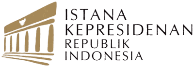
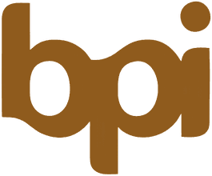

Understanding the World, Finding Your Place in It
Konferensi intensif dua hari bagi pimpinan organisasi pelajar se-Indonesia (OSIS, MPK, Pramuka, dan PMR). Bertukar wawasan bersama tokoh nasional, praktisi industri, dan pembuat kebijakan di University Club Jakarta.
3–4 Oktober 2026
Sabtu & Minggu (2 Hari)
08.00–20.30 WIB
Tatap Muka, Pulang-hari
University Club Jakarta
Kebayoran Baru, Jakarta Selatan
Pimpinan Pelajar
SMA/SMK/MA Sederajat
Berbagai Sudut Pandang, Satu Ruang Belajar
Tokoh nasional, praktisi industri, dan pembuat kebijakan yang memandu dialog sepanjang konferensi.


Miftah Sabri
Pendiri Akademi Kader Bangsa & University Club Jakarta
Pengantar mendalam mengenai arah kepemimpinan nasional dan etos kader bangsa Indonesia.


Dirgayuza Setiawan
Asisten Khusus Presiden RI
Dinamika geopolitik global, transformasi kepemimpinan negara, dan posisi strategis Indonesia.

Windy Natriavi
Senior Vice President Development Investment di Danantara DMF
Inovasi kebijakan publik, mobilisasi modal pembangunan, dan solusi terukur persoalan sosial.

Achmad Zaky
Co-Founder & Ex-CEO Bukalapak & Init-6
Penciptaan nilai ekonomi baru, kewirausahaan berbasis teknologi, dan ekosistem ventura Indonesia.

Fauzan Zidni
Produser Film & Ketua Badan Perfilman Indonesia
Bahasa sinema, narasi budaya, dan kekuatan ekspresi seni dalam menjaga nilai-nilai kemanusiaan.
Empat Dimensi Kegiatan NSLC
Presentasi Ahli
Paparan langsung praktisi papan atas perihal sains, seni, bisnis, dan kebijakan publik.
Diskusi Interaktif
Tanya-jawab kritis dan perdebatan ide yang menguji pemikiran dalam kelompok kerja.
Kunjungan Institusi
Eksplorasi lapangan langsung ke institusi strategis untuk melihat operasional dunia nyata.
Proyek Karya Kreatif
Penyusunan karya kelompok sebagai sintesis dari wawasan yang didapatkan selama konferensi.
Fasilitas Peserta Terpilih
Disediakan penuh selama 2 hari penyelenggaraan:
-
Konsumsi Lengkap: Makan siang, makan malam, dan coffee breaks selama 2 hari. -
Conference Kit: Lanyard dan totebag resmi NSLC 2026. -
Sertifikat Resmi: Sertifikat kepemimpinan bertaraf nasional dari IFLH. -
Jaringan Pemimpin Muda: Akses ke jejaring alumni pimpinan pelajar se-Indonesia.
Rundown 2 Hari Acara
Struktur jadwal dari pemahaman makro hingga pembuatan solusi konkret.
Kedatangan & Registrasi Peserta
Check-in, pembagian ID card dan participant kit, serta pembagian kelompok.
Sambutan Pembukaan — Miftah Sabri
Sambutan pembuka dan pengantar mengenai tujuan serta semangat program.
Sesi Perkenalan & Icebreaker
Icebreakers dan aktivitas kelompok untuk membangun koneksi antarpeserta dari berbagai provinsi.
The World We Are In — Dirgayuza Setiawan
Memahami perubahan besar yang sedang terjadi di dunia dan bagaimana Indonesia berada di tengahnya.
Makan Siang & Networking
Santap siang bersama di University Club Jakarta dan ramah tamah antarpelajar.
Innovation in Public Policy — Windy Natriavi
Bagaimana kebijakan publik merespons perubahan dan bagaimana inovasi menyelesaikan persoalan masyarakat.
Istirahat
Coffee break dan jeda antar sesi.
Business, Economy & Entrepreneurship — Achmad Zaky
Bagaimana ekonomi dan dunia bisnis bekerja, bagaimana entrepreneur menciptakan nilai, serta peluang dari perubahan dunia.
Refleksi Kelompok
Peserta merefleksikan beragam perspektif hari pertama dan mendiskusikan pertanyaan atau insight yang muncul.
Makan Malam & Bonding
Makan malam bersama dan aktivitas informal untuk memperkuat koneksi antarpeserta.
Persiapan Proyek Kreatif
Peserta menentukan ide, format, dan pembagian peran untuk karya yang akan dibuat pada hari kedua.
Penutup Hari Pertama
Peserta pulang ke kediaman masing-masing.
Timeline NSLC 2026
Rangkaian tanggal penting seleksi kepemimpinan nasional.
Registrasi
Isi formulir & unggah berkas seleksi.
Screening
Seleksi dan verifikasi berkas pendaftar.
Announcement
Notifikasi kelulusan peserta terpilih.
Technical Briefing
Briefing teknis daring persiapan acara.
Pelaksanaan
Konferensi tatap muka di University Club.
University Club Jakarta
Venue pertemuan resmi pimpinan pemuda di kawasan Kebayoran Baru, Jakarta Selatan.
Official Venue
Alamat Lengkap
University Club Jakarta
Jl. Brawijaya VIII No. 8, Kebayoran Baru, Jakarta Selatan, DKI Jakarta 12160
Persyaratan Peserta
-
Siswa SMA/SMK/MA sederajat seluruh Indonesia. -
Pengurus atau pimpinan organisasi siswa (OSIS, MPK, Pramuka, PMR, atau ekstrakurikuler lain). -
Hadir fisik (offline) di Jakarta pada 3–4 Oktober 2026. -
Komitmen penuh dan kesiapan berpartisipasi aktif dalam kelompok kerja.
Ketentuan lengkap seleksi dan berkas dapat dibaca pada NSLC 2026 Guidebook.
Formulir Peserta NSLC 2026
Lengkapi data diri dan tautan berkas seleksi Anda.
FAQ NSLC 2026
Rangkuman pertanyaan yang paling sering diajukan calon peserta.
Siapa yang boleh mendaftar sebagai peserta?
NSLC 2026 terbuka bagi siswa-siswi SMA/sederajat se-Indonesia — tidak terbatas Jabodetabek — yang memimpin atau aktif berkontribusi dalam organisasi pelajar (OSIS, Pramuka, MPK, Paskibra, PMR, dan sejenisnya) di sekolahnya, serta memiliki rasa ingin tahu intelektual dan jiwa sosial yang tinggi.
Apakah ada biaya pendaftaran?
Tidak ada. Peserta NSLC 2026 tidak dipungut biaya apa pun. Namun peserta bertanggung jawab mengatur transportasi dari venue ke tempat tinggal masing-masing.
Berkas apa saja yang harus saya kumpulkan?
Tiga berkas: (1) esai motivation letter, (2) CV, dan (3) tangkapan layar twibbon yang sudah diunggah di Instagram. Ketiganya dikumpulkan dalam satu tautan Google Drive, lalu tautannya diisikan pada formulir pendaftaran.
Bagaimana ketentuan penulisan esai?
Panjang esai minimal 450 kata dan maksimal 800 kata, ditulis sesuai kaidah KBBI, menggunakan font Times New Roman 12pt dengan spasi 1,5, dan disimpan dalam format PDF. Beri nama file dengan format “(Nama Lengkap) - (Asal Sekolah)”. Esai memuat motivasi Anda mengikuti kegiatan ini dan bentuk kontribusi nyata yang akan dibawa setelah mengikuti kegiatan.
Di mana saya bisa mengunduh template twibbon?
Template twibbon resmi NSLC 2026 dapat diunduh melalui bit.ly/nslc2026-berkas. Unggah twibbon tersebut di akun Instagram Anda, lalu kumpulkan tangkapan layarnya bersama berkas lain.
Bagaimana format penyelenggaraannya? Apakah peserta menginap?
Kegiatan berlangsung offline dan pulang-hari (tidak menginap) pada Sabtu–Minggu, 3–4 Oktober 2026, pukul 08.00–20.30 WIB, di University Club Jakarta, Jl. Brawijaya VIII No. 8, Kebayoran Baru, Jakarta Selatan.
Kapan jadwal seleksi dan pengumumannya?
Registrasi 18–24 September 2026, screening 27–28 September 2026, announcement 29 September 2026, technical briefing 1 Oktober 2026, dan pelaksanaan 3–4 Oktober 2026.
Apakah peserta terpilih wajib mengikuti seluruh rangkaian acara?
Ya. Apabila pendaftar dinyatakan lolos seleksi, peserta diwajibkan mengikuti seluruh rangkaian acara pada 3–4 Oktober 2026 di University Club Jakarta.
Bagaimana jika saya masih punya pertanyaan lain?
Silakan hubungi sekretariat melalui email nslc@iflhub.web.id atau grup WhatsApp resmi NSLC 2026 yang tautannya dibagikan setelah Anda mengirim formulir pendaftaran.
 The Sabri Podcast
University Club Jakarta
The Sabri Podcast
University Club Jakarta